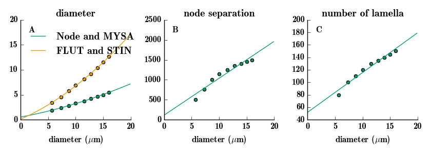

The code for the paper:
Lubba CH, Le Guen Y, Jarvis S, Jones NS, Cork SC, Eftekhar A, Schultz SR (2018) PyPNS: Multiscale Simulation of a Peripheral Nerve in Python. Neuroinformatics
doi: 10.1007/s12021-018-9383-z
Is available at the authors repositories:
"The latest version of our toolbox PyPNS (RRID:SCR_016336) can be accessed over GitHub: http://github.com/chlubba/PyPNS. The version this paper is based on is stored on Zenodo: https://doi.org/10.5281/zenodo.1204836. Scripts for the figures are as well maintained on GitHub: http://github.com/chlubba/PyPNS-PaperFigures."
A test run of the figure 3 generating code:
python ___paper_fig3_extrapolateMcIntyre.py
reproduced the figure from the paper:
